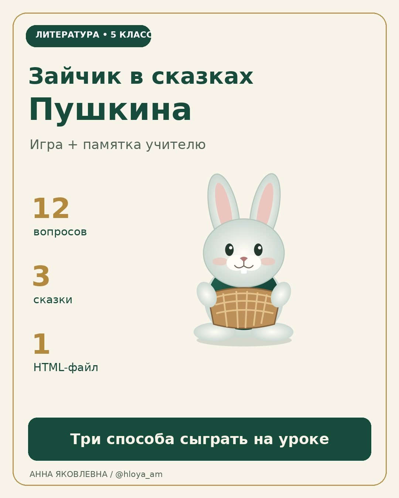

Зайчик в сказках Пушкина
12 вопросов, три сказки и памятка учителю. Лови морковки, вспоминай героев и объясняй свой ответ.
ИгратьСкачать весь комплектВыберите прочитанную сказку
«О мёртвой царевне и о семи богатырях» - 6 вопросов; «О царе Салтане…» и «О рыбаке и рыбке» - по 3. Можно играть по одной сказке или по всем трём.
Двигайте зайчика мышью, пальцем или стрелками. Морковка с золотым кольцом открывает вопрос. После ошибки показывается правильный ответ, а вопрос повторяется. Очки - игровой результат, а не школьная отметка.
Чтобы играть без интернета, распакуйте комплект и откройте HTML-файл в браузере. На мобильном устройстве предпросмотр файла может не запускать игру. Прогресс после перезагрузки не сохраняется.
Мастер-класс для вашей команды учителей
На примере этой игры покажу, как превратить вопросы по тексту в интерактивное задание и проверить ответы перед уроком. Формат можно обсудить для школьного методобъединения или педагогического сообщества.
Обсудить мастер-класс в InstagramВ профиле @hloya_am нажмите «Сообщение» и напишите «Мастер-класс по игре». Укажите, для каких педагогов вы его готовите и что хотите разобрать.